정보통신기사(구) (2013-06-09 기출문제)
1과목: 디지털 전자회로
1. 다음 그림과 같은 평활회로에서 출력 맥동률을 최소화하기 위한 방법으로 옳은 것은?
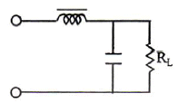
- L과 C 값을 적절하게 감소시킨다.
- L값은 증가, C값은 감소시킨다.
- L값은 감소, C값은 증가시킨다.
- L과 C 값을 적절하게 증가시킨다.
(정답률: 68%)

2. 정류회로에서 직류전압이 200[V]이고 리플(ripple) 전압 실효값이 4[V]였다면 리플률은 얼마인가?
- 1[%]
- 2[%]
- 10[%]
- 20[%]
(정답률: 74%)
3. 교류입력의 반주기에 대해 브리지 정류기의 다이오드 동작 조건에 대한 설명으로 적절한 것은?
- 한 개의 다이오드가 순방향 바이어스이다.
- 두 개의 다이오드가 순방향 바이어스이다.
- 모든 다이오드가 순방향 바이어스이다.
- 모든 다이오드가 역방향 바이어스이다.
(정답률: 82%)
4. 전압 이득이 60[dB]인 저주파 증폭기에 궤환율 0.08인 부궤환을 걸면 비직선 왜곡의 개선율은 얼마가 되는가?
- 0.11[%]
- 0.99[%]
- 1.23[%]
- 8.77[%]
(정답률: 61%)
5. 다음 그림은 JFET 소자의 직류전달특성을 나타내었다. 소자의 포화전류 IDS와 컷오프 전압 VGS(off)은 얼마인가?
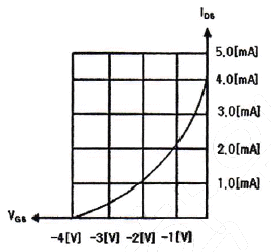
- IDS = 4.0[mA], VGS(off) = -3.0[V]
- IDS = 5.0[mA], VGS(off) = -3.0[V]
- IDS = 4.0[mA], VGS(off) = -4.0[V]
- IDS = 1.0[mA], VGS(off) = -4.0[V]
(정답률: 79%)
6. 트랜지스터의 컬렉터 누설전류가 주위온도의 변화로 15[μA]에서 150[μA]로 증가되었을 때 컬렉터 전류는 9[mA]에서 9.5[mA]로 변화하였다. 이 트랜지스터의 안정계수[S]는 약 얼마인가?
- 9.3
- 8.4
- 4.5
- 3.7
(정답률: 48%)
7. 궤환 증폭기에서 전달이득이 A, 궤환율이 β일 때, |1-βA]=0이었다. 이 때 |βA|=1이면 증폭기의 증폭도는 어떤 동작을 하는가?
- 정류
- 부궤환
- 발진
- 증폭
(정답률: 75%)
8. 다음 중 이상적인 연산증폭기의 특성이 아닌 것은?
- 전압증폭도가 무한대
- 입력 임피던스가 무한대
- 출력 임피던스가 무한대
- 주파수 대역폭이 무한대
(정답률: 66%)
9. 수정편에 기계적인 압력을 가하면 표면에 전하가 나타나 전압이 발생하는 현상을 무엇이라 하는가?
- 압전기 현상
- 부성저항 현상
- 자기 왜형 현상
- 인입 현상
(정답률: 80%)
10. 다음 중 주파수 변조에 대한 설명으로 옳지 않은 것은?
- 협대역 FM과 광대역 FM 방식이 있다.
- 변조신호에 따라 반송파의 주파수를 변화시킨다.
- 선형 변조방식이다.
- 반송파로는 cos이나 sin 함수와 같은 연속함수를 사용한다.
(정답률: 76%)
11. 변조신호 주파수 400[Hz], 전압 3[V]로 주파수를 변조하였을 때 변조지수가 50이었다. 이 때 최대주파수편이 Δf는 얼마인가?
- 20[kHz]
- 40[kHz]
- 80[kHz]
- 100[kHz]
(정답률: 52%)
12. 다음 그림과 같은 회로에서 콘덴서 양단의 스텝 응답에 대한 상승 시간(rise time)은? (단, RC 시정수는 2[μs])
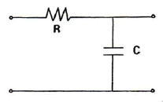
- 2[μs]
- 2.2[μs]
- 4[μs]
- 4.4[μs]
(정답률: 66%)
13. Duty cycle이 0.1이고 주기가 40[μs]인 펄스의 폭은?
- 1[μs]
- 2[μs]
- 3[μs]
- 4[μs]
(정답률: 79%)
14. 다음 그림의 회로는 어떤 동작을 하는가?
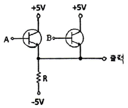
- OR
- NOR
- AND
- NAND
(정답률: 80%)
15. 그레이 코드(Gray Code) 1110을 2진수로 변환하면?
- 1110
- 1100
- 1011
- 0011
(정답률: 84%)
16. 다음 그림의 논리 회로에 대한 논리식은?
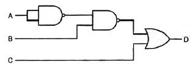
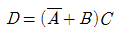
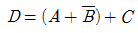
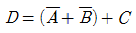
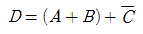
(정답률: 76%)
17. 다음 그림과 같이 2n개(0~7)의 십진수 입력을 넣었을 때 출력이 2진수(000~1110로 나오는 회로의 명칭은?
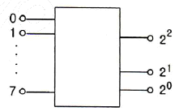
- 디코더 회로
- A-D 변환회로
- D-A 변환회로
- 인코더 회로
(정답률: 75%)
18. 다음 그림과 같은 회로의 명칭은?
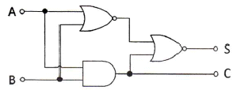
- 동시 회로
- 반동시 회로
- Full Adder
- Half Adder
(정답률: 75%)
19. 다음 계수기(counter)의 명칭으로 알맞은 것은? (문제 오류로 실제 시험에서는 다, 라번이 정답처리 되었습니다. 여기서는 다번을 누르면 정답 처리 됩니다.)
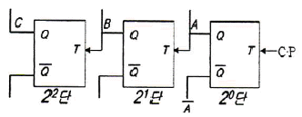
- 상향 4진 계수기
- 하향 4진 계수기
- 상향 8진 계수기
- 하향 8진 계수기
(정답률: 75%)
20. 다음 그림과 같은 회로의 명칭은?
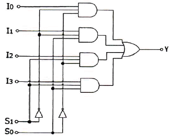
- 병렬 가산기
- 멀티플렉서
- 디멀티플렉서
- 디코더
(정답률: 78%)
2과목: 정보통신 시스템
21. 일반적으로 통신망의 크기(Network coverage)에 따라 통신망을 분류할 때 적절하지 않은 것은?
- LAN
- MAN
- WAN
- CAN
(정답률: 88%)
22. 회선 교환방식과 비교할 때 메시지 교환방식의 장점이 아닌 것은?
- 회선의 효율성이 크다.
- 실시간 통신 또는 대화식 통신에 적합하다.
- 전송량이 많은 경우 한 개의 메시지를 여러 목적지로 전송할 수 있다.
- 에러 제어와 회복 절차를 구성할 수 있다.
(정답률: 81%)
23. 정보통신시스템의 기본 구성에서 데이터전송계에 속하지 않는 것은?
- 중앙처리장치
- 전송회선
- 단말장치
- 통신제어장치
(정답률: 74%)
24. RS-232C, V.24/28 등의 프로토콜은 OSI 7계층 중 어디에 해당하는가?
- 1계층
- 2계층
- 3계층
- 4계층
(정답률: 81%)
25. 각종 제어문자들의 기능 중 데이터 블록의 전송이 끝나 논리적 링크를 해제할 때 사용되는 것은?
- ACK
- NAK
- ENQ
- EOT
(정답률: 85%)
26. 프로토콜의 구성요소 중 "통신할 데이터의 형식"이란 의미로 코딩, 신호레벨 등을 정의하며 통신에서 전달되는 자료의 구조를 정의하는 것은?
- 의미(Semantics)
- 구문(Syntax)
- 타이밍(Timing)
- 포맷(Format)
(정답률: 81%)
27. 다음 중 OSI 7계층의 순서가 맞는 것은?
- 물리계층 - 네트워크계층 - 데이터링크계층 - 트랜스포트계층 - 세션계층 - 표현계층 - 응용계층
- 물리계층 - 데이터링크계층 - 트랜스포트계층 - 네트워크계층 - 세션계층 - 표현계층 - 응용계층
- 물리계층 - 데이터링크계층 - 네트워크계층 - 트랜스포트계층 - 표현계층 - 세션계층 - 응용계층
- 물리계층 - 데이터링크계층 - 네트워크계층 - 트랜스포트계층 - 세션계층 - 표현계층 - 응용계층
(정답률: 79%)
28. 표준화 단체인 IETF가 인터넷 표준을 개발하여 완성한 표준문서를 무엇이라 하는가?
- RFC
- NFC
- TFC
- IFC
(정답률: 80%)
29. 호출 개시 과정을 통해 수신측과 논리적 접속이 이루어지며 각 패킷은 미리 정해진 경로를 통해 전송되어 전송한 순서대로 도착되는 교환방법은?
- 회선교환방법
- 가상회선교환방법
- 데이터그램교환방법
- 메시지교환방법
(정답률: 65%)
30. 위성통신이 다중접속방법으로 옳지 않은 것은?
- FDMA
- TDMA
- CDMA
- WDMA
(정답률: 81%)
31. 다음 중 기업이 부가가치통신망(VAN)을 이용하는 목적과 거리가 먼 것은?
- 이기종 호스트 컴퓨터간 접속, 단말기의 접속 프로토콜 변환 등을 네트워크에서 함으로써 기업의 서버부하 경감
- 데이터 통신 효율 향상을 통한 통신바용 절감
- 전화서비스의 안정적 이용
- 회선의 확장, 변경, 운용을 VAN업체에 위탁함에 따른 기업 내 업무 효율화
(정답률: 83%)
32. 전화통신망에서 적용되고 있는 신호 방식(signaling)은 무엇인가?
- K2
- R2
- L2
- P2
(정답률: 73%)
33. 다음 중 xDSL 회선의 변복조 방식인 CAP(Carrier-less Amplitude/Phase)와 DMT(Discrete Multi-Tone)의 주파수 배치표로 옳은 것은?
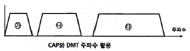
- CAP 방식 : ㉮ 음성전화(POTS), ㉯ 역방향(Upstream), ㉰ 순방향(Downstream)
- CAP 방식 : ㉮ 순방향(Downstream), ㉯ 역방향(Upstream), ㉰ 음성전화(POTS)
- DMT 방식 : ㉮ 순방향(Downstream), ㉯ 역방향(Upstream), ㉰ 음성전화(POTS)
- DMT 방식 : ㉮ 음성전화(POTS), ㉯ 순방향(Downstream), ㉰ 역방향(Upstream)
(정답률: 82%)
34. 다음 중 CSMA/CD 방식에 관한 특징으로 옳지 않은 것은?
- 데이터 전송이 필요할 때 임의로 채널을 할당하는 랜덤할당방식이다.
- 버스 구조에 이용될 수 있다.
- 노드수가 많고, 데이터 전송량이 많을수록 안정적이고 효율적으로 전송이 가능하다.
- 채널로 전송된 프레임은 모든 노드에서 수신이 가능하다.
(정답률: 84%)
35. PCM 통신방식에서 4[kHz]의 대역폭을 갖는 음성 정보를 8[bit] 코딩으로 표본화하면 음성을 전송하기 위해 필요한 데이터 전송률은 얼마인가?
- 4[kbps]
- 8[kbps]
- 32[kbps]
- 64[kbps]
(정답률: 77%)
36. 다음 중 근거리통신망(LAN)에서 사용하는 프로토콜이 아닌 것은?
- CSMA/CD
- Token Ring
- ALOHA
- BGP(Boarder Gateway Protocol)
(정답률: 74%)
37. 인터넷 프로토콜 중 IPv4는 주소부족, 보안성 취약, 실시간 전송 시의 문제점 등이 있어 IPv4의 주소체계를 개선한 차세대 인터넷 프로토콜은?
- IPv5
- IPv6
- Subnetting
- NAT
(정답률: 90%)
38. OSI 7계층 중 네트워크계층에서 동작하는 장비는?
- HUB
- Repeater
- Modem
- Router
(정답률: 88%)
39. 서비스의 중단을 야기하는 장애구간을 탐색하기 위하여, 각 구간을 절분하여 시험하는 루프백(Loop-Back) 시험에 대한 설명으로 잘못된 것은?
- 루프백의 제어방법에는 자국(Local) 제어방법과 원격국(Remote) 제어방법이 있다.
- 원격루프백은 자국으로부터 수신한 신호를 자국으로 돌려주는 것을 말한다.
- 루프백 시험을 위해서는 패턴을 발생하고 분석하는 계측기를 사용하여야 한다.
- 루프백이 수행되는 지점은 각 통신시스템에서 신호의 입력 및 출력이 이루어지는 지점이다.
(정답률: 75%)
40. 다음 중 VPN(Virtual Private Network)에서 사용하지 않는 터널링 프로토콜은 무엇인가?
- IPSec
- L2TP
- PPTP
- SNMP
(정답률: 70%)
3과목: 정보통신 기기
41. 유비쿼터스 센서 네트워크(USN) 구성에서 기본적인 기술 구성요소가 아닌 것은?
- 전송부(BUS)
- 제어부(MCU)
- 센서부(Sensor)
- 통신부(Radio)
(정답률: 54%)
42. 다음에서 설명하는 내용은 정보단말기의 어떤 기술을 설명한 것인가?
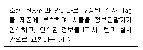
- IPTV
- RLC
- RFID
- HSDPA
(정답률: 91%)
43. 신호의 2진 표시에서 1일 때는 전압이 발생하고 0일 때는 발생하지 않는 신호는?
- 단극성 NRZ
- 양극성 RZ
- 맨체스터 부호
- CMI 부호
(정답률: 71%)
44. 광전송시스템에서 전송신호와 간섭을 유발시키는 역반사 잡음을 방지하기 위한 것은?
- 광감쇠기
- 광서큘레이터
- 광커플러
- 광아이솔레이터
(정답률: 82%)
45. 다음 중 주파수 분할 다중화기(FDM)에 대한 설명으로 옳지 않은 것은?
- 채널간의 완충 지역으로 가드밴드(Guard Band)가 있어 대역폭이 낭비가 된다.
- 저속의 Data를 각각 다른 주파수에 변조하여 하나의 고속회선에 신호를 싣는 방식이다.
- 주파수 분할 다중화기는 전송하려는 신호에서 필요한 대역폭보다 전송 매체의 유효 대역폭이 클 경우에 가능하다.
- 각 채널은 전송 회선처럼 고속의 채널을 독점하는 것처럼 보이지만 실제로 분배된 시간만 이용한다.
(정답률: 73%)
46. 가입자선에 위치하고 단말기와 디지털 네트워크 사이의 인터페이스를 제공하며, 유니폴라 신호를 바이폴라 신호로 변환시키는 것은?
- DSU(Digital Service Unit)
- 변복조기(MODEM)
- CSU(Channel Service Unit)
- 다중화기
(정답률: 79%)
47. 다음 중 HUB에 대한 설명으로 옳은 것은?
- 구내 정보통신망(LAN)과 단말장치를 접속하는 선로분배장치이다.
- 구내 정보통신망(LAN)과 외부 네트워크를 연결하여 다중경로를 제어하는 장치이다.
- 개방형접속표준(OSI7)에서 제5계층의 기능을 담당하는 장치이다.
- 아날로그 선로상의 신호를 분배, 접속하는 중계장치이다.
(정답률: 72%)
48. 다음 중 광통신용 신호와 관련되 다중화 기술은 무엇인가?
- FDM
- TDM
- WDM
- CDM
(정답률: 84%)
49. 대용량 전자교환기에서 가장 많이 채택하고 있는 접속 제어 방식은?
- 자동 제어 방식
- 반전자 제어 방식
- 축적 프로그램 제어 방식
- 중앙 제어 방식
(정답률: 76%)
50. 유선전화망에서 노드가 10개일 때 그물형(Mesh형)으로 교환회선을 구성시 링크 수를 몇 개로 설계하여야 하는가?
- 30개
- 35개
- 40개
- 45개
(정답률: 90%)
51. 다음 중 IPTV 서비스를 위한 네트워크 엔지니어링과 품질 최적화를 위한 기능으로 맞지 않는 것은?
- 트래픽 관리
- 망용량 관리
- 네트워크 플래닝
- 영상자원 관리
(정답률: 72%)
52. 20개의 중계선으로 5[Erl]의 호량을 운방하였다면 이 중계선의 효율은 몇 [%]인가?
- 20[%]
- 25[%]
- 30[%]
- 35[%]
(정답률: 87%)
53. 다음 중 CCTV의 기본 구성이 아닌 것은?
- 촬상 장치
- 전송 장치
- 교환 장치
- 표시 장치
(정답률: 76%)
54. 다음 중 양측파대(DSB)와 비교할 때 단측파대(SSB) 통신의 특징으로 틀린 것은?
- S/N비가 개선된다.
- 점유주파수대역이 넓다.
- 적은 전력으로 통신이 가능하다.
- 선택성 페이딩(fading)에 의한 왜곡이 적다.
(정답률: 74%)
55. 지구국으로부터 통신위성까지의 거리가 36,000[km]일 때, 이 지구국에서 발사된 전파가 통신위성을 경유하여 지구국에 도착할 때까지의 걸리는 이론적 시간은 얼마인가? (단, 지구국과 통신위성 장치에서 소요되는 시간은 고려하지 않는다.)
- 240[ms]
- 245[ms]
- 250[ms]
- 255[ms]
(정답률: 86%)
56. CDMA 대역확산 통신기술을 이용하여 다중경로전파 가운데 원하는 신호만을 분리할 수 있는 수신기는?
- 레이크 수신기
- Muti channel 수신기
- 헤테로다인 수신기
- VLR 수신기
(정답률: 80%)
57. 전리층을 이용한 통신에 가장 많이 사용되는 주파수대는?
- VLF대
- HF대
- VHF대
- UHF대
(정답률: 60%)
58. 비디오텍스에서 직선, 원호 및 다각형 등의 기하학적 형상을 가진 도형요소를 사용하여 부호화하는 방식은?
- 알파 포토그래픽 방식
- 알파 지오메트릭 방식
- 알파 모자이크 방식
- 알파 캐릭터 방식
(정답률: 86%)
59. 다음 중 양안시차, 폭주(Vergence)를 이용하는 방식의 TV는 무엇인가?
- HDTV
- SDTV
- 3DTV
- IPTV
(정답률: 84%)
60. 다음 중 영상회의 시스템 기술에 속하지 않는 것은?
- 동화상 처리
- 음성 처리
- 벡터 양자화
- 송ㆍ수신 주사방식
(정답률: 71%)
4과목: 정보전송 공학
61. 10[GHz]의 직접확산 시스템이 20[kbaud]의 데이터 전송에 사용된다. 20[Mbps]의 확산부호를 BPSK 변조시킬 때, 이 시스템의 처리이득은 얼마인가?
- 13[dB]
- 18[dB]
- 27[dB]
- 30[dB]
(정답률: 72%)
62. 다수의 디지털 신호를 하나의 채널로 전송하는 것을 무엇이라 하는가?
- 다중화
- 표본화
- 양자화
- 부호화
(정답률: 83%)
63. 다음 중 QAM 변조방식에 대한 설명으로 가장 적합한 것은?
- 입력신호에 따라 반송파의 진폭을 변화시키는 방식
- 입력신호에 따라 반송파의 최소 주파수를 변화시키는 방식
- 진폭 신호에 따라 적은 전력으로 다량의 정보를 전송시키는 방식
- 반송파의 진폭과 위상을 데이터에 따라 변화시키는 진폭변조와 위상변조 방식의 혼합
(정답률: 85%)
64. 18[kHz]까지 전송할 수 있는 PCM 시스템에서 요구되는 표본화 주파수는?
- 9[kHz]
- 18[kHz]
- 36[kHz]
- 72[kHz]
(정답률: 82%)
65. 제한대역매체를 통해 기본파와 제3고조파를 포함하는 디지털 신호를 전송하는데 필요한 대역폭은 얼마인가? (단, n[bps]로 디지털 신호를 보내고자 한다.)
- n[Hz]
- 2n[Hz]
- 4n[Hz]
- 6n[Hz]
(정답률: 83%)
66. 다음 중 광통신에서 사용되는 레이저의 특징으로 틀린 것은?
- 간섭성이 좋다.
- 매우 순수한 단색광을 방출한다.
- 단위면적당 출력이 매우 강하다.
- 직진성이 약하다.
(정답률: 87%)
67. 다음 중 금속막에 의한 차단유무에 따라 STP 케이블과 UTP 케이블로 분류되는 정송매체는?
- 동축케이블
- 꼬임 쌍선
- 단일모드 광섬유
- 다중모드 광섬유
(정답률: 82%)
68. 다음 중 ⓐ - ⓑ가 순서대로 올바르게 짝지어진 것은?
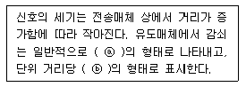
- 지수함수 - S/N비
- 로그함수 - 데시벨
- 지수함수 - Baud
- 로그함수 - BPS
(정답률: 82%)
69. 전송방식에는 크게 동기식과 비동기식으로 구분된다. 다음 중 동기식 전송방식의 특징이 아닌 것은?
- 전송할 정보 묶음 단위로 앞뒤에 동기문자를 가지며 전송효율이 높다.
- 클럭(Clock)을 동기신호로 사용한다.
- 주로 전송 속도가 9,600[bps] 이상에서 사용한다.
- 전송할 묶음 문자 사이에 휴지 간격(idle time)이 존재한다.
(정답률: 78%)
70. 다음 중 HDLC 프레임 구조에서 FCS의 비트수는?
- 6
- 12
- 16
- 24
(정답률: 71%)
71. 다음 중 혼합식 동기 전송의 특징이 아닌 것은?
- 시작 비트와 정지 비트가 존재한다.
- 송신기와 수신기는 동기 상태를 유지하고 있어야 한다.
- 비동기식 전송보다 빠르고 동기식 전송보다 느리다.
- 전송 성능이 좋아지고 전송 대역폭이 좁아지는 장점이 있다.
(정답률: 67%)
72. 다음 중 NO.7 신호방식의 기능별 블록 중 사용자부(UP)에 해당하지 않는 것은?
- MTP(Message Transfer Part)
- TCAP(Transaction Capabilities Application Part)
- SCCP(Signaling Connection Control Part)
- TUP(Telephone User Part)
(정답률: 66%)
73. 다음 중 TCP와 UDP 헤더의 구조에 대한 설명으로 틀린 것은?
- TCP 세그먼트의 헤더는 8바이트인 반면, UDP는 20바이트의 크기를 갖는다.
- TCP 포트 번호는 UDP 포트 번호와 서로 독립적이다.
- TCP에서는 강제적으로 검사합(checksum)을 수행하는 반면, UDP는 검사합을 선택적으로 수행한다.
- UDP는 비연결형 방식이고, TCP는 연결형 방식이다.
(정답률: 80%)
74. 다음 중 서브넷 마스크(Subnet Mask)의 목적이 아닌 것은?
- 주소 확장
- 네트워크의 부하 감소
- 네트워크의 논리적인 분할
- 네트워크 ID와 호스트 ID의 구분
(정답률: 55%)
75. 다음 중 IPv4 주소에 대한 설명으로 옳지 않은 것은?
- 총 16비트로 구성되어 있다.
- Network ID 부분과 Host ID 부분으로 구성된다.
- 모든 컴퓨터는 고유한 IP 주소를 가진다.
- 인터넷에서 호스트에게 할당 가능한 IP 주소는 A, B, C 세 개의 Class이다.
(정답률: 74%)
76. 다음 중 IP 주소가 B Class이고 전체를 하나의 네트워크 망으로 사용하고자 할 때 적절한 서브넷 마스크 값은?
- 255.0.0.0
- 255.255.0.0
- 255.255.255.0
- 255.255.255.255
(정답률: 81%)
77. HDLC(High-level Data Link Control) 프로토콜 프레임의 제어부 형식 중 링크 상태의 초기 설정, 데이터 전송 동작 모드의 설정요구 및 응답, 데이터링크의 확립 및 절단 등에 사용되는 형식은?
- 정보전송 형식(I frame)
- 감시 형식(S frame)
- 비번호제 형식(U frame)
- 시험 형식(T frame)
(정답률: 76%)
78. 원격지 컴퓨터에 접속해서 파일을 다운로드 하거나 업로드 할 수 있는 서비스를 제공하는 서버는 어느 것인가?
- 프록시(Proxy) 서버
- FTP 서버
- 텔넷(Telnet) 서버
- POP 서버
(정답률: 79%)
79. 데이터 링크 프로토콜에 해당되지 않는 것은?
- HDLC
- SNMP
- LAP-B
- BSC
(정답률: 67%)
80. 다음 중 Stop-and-Wait ARQ 방식에 대한 설명으로 옳지 않은 것은?
- 가장 간단한 형태의 ARQ이다.
- 수신측에서는 오류 발생 유무에 따라 ACK이나 NAK 신호를 보낸다.
- 오류 검출 능력이 우수한 부호를 사용해야 한다.
- ARP 프로토콜에서 사용한다.
(정답률: 68%)
5과목: 전자계산기일반 및 정보통신설비기준
81. 다음 중 2진수 (100011)2의 2의 보수는 얼마인가?
- 100011
- 011100
- 011101
- 011110
(정답률: 83%)
82. 다음 중 중앙처리장치(CPU)의 기능이 아닌 것은?
- 명령어 생성(Instruction Create)
- 명령어 인출(Instruction Fetch)
- 명령어 해독(Instruction Decode)
- 데이터 인출(Data Fetch)
(정답률: 62%)
83. 8비트로 된 레지스터에서 첫째 비트는 부호비트로 0, 1로 양, 음을 나타낸다고 할 때 2의 보수(2's Complement)로 숫자를 표시한다면 이 레지스터로 표현할 수 있는 10진수의 범위로 올바른 것은?
- -256 ~ +256
- -128 ~ +127
- -128 ~ -128
- -256 ~ +127
(정답률: 83%)
84. 다음 중 10진수 47.625를 2진수로 변환한 것으로 옳은 것은?
- 101111.111
- 101111.010
- 101111.001
- 101111.101
(정답률: 74%)
85. 가상 기억장치 구현방법의 한 가지로, 기억장치를 동일한 크기의 페이지 단위로 나누고 페이지 단위로 주소 변환 및 대체를 하는 방식은?
- 논리 메모리 분할 기법
- 페이징 기법
- 스케줄링 기법
- 세그먼테이션 기법
(정답률: 79%)
86. 대기 중인 프로세서가 요청한 자원들이 다른 대기 중인 프로세스에 의해서 점유되어 다시 프로세스 상태를 변경시킬 수 없는 경우가 발생하게 되는데 이러한 상황을 무엇이라 하는가?
- 한계 버퍼 문제
- 교착상태
- 페이지 부재상태
- 스레싱(Thrashing)
(정답률: 74%)
87. 16진수의 값 ‘12345678’을 기억장치에 저장하려고 한다. Little Endian 방식으로 저장된 것은 어느 것인가?
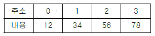
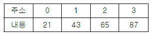
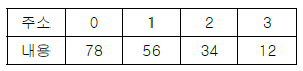
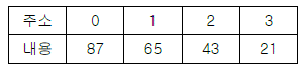
(정답률: 78%)
88. 다음 중 BCD 코드 1001에 대한 해밍 코드를 구하면? (단, 짝수 패리티 체크를 수행한다.)
- 0011001
- 1000011
- 0100101
- 0110010
(정답률: 66%)
89. 컴퓨터의 운영체제에서 로더(loader)란 실행 프로그램 혹은 데이터를 주기억 장치내의 일정한 번지에 저장하는 작업을 말하는 것이다. 다음 중 로더의 주요 기능이 아닌 것은?
- 프로그램과 프로그램 간의 연결(linking)을 수행한다.
- 출력 데이터에 대해 일시 저장(spooling) 기능을 수행한다.
- 프로그램이 실행될 수 있도록 번지수를 재배치(relocation)한다.
- 프로그램 또는 데이터가 저장될 번지수를 계산하고 할당(allocation)한다.
(정답률: 76%)
90. 다음 중 선형 자료구조가 아닌 것은?
- 배열
- 스택
- 그래프
- 큐
(정답률: 67%)
91. 선로설비의 회선 상호간, 회선과 대지간 및 회선의 심선 상호간의 절연 저항은 직류 500볼트 절연저항계로 측정하여 얼마 이상이어야 하는가?
- 5메가옴
- 10메가옴
- 15메가옴
- 20메가옴
(정답률: 78%)
92. 가공강전류전선의 사용전압이 저압일 경우 가공통신선의 지지물과 가공강전류전선간의 이격거리는 얼마 이상이어야 하는가?
- 30[cm]
- 60[cm]
- 90[cm]
- 1[m]
(정답률: 63%)
93. 다음 중 방송통신설비가 다른 사람의 방송통신설비와 접속되는 경우에 그 건설과 보전에 관한 책임 등의 한계를 명확하게 하기 위하여 설정하여야 하는 것은?
- 분기점
- 분계점
- 국선분계점
- 국선분기점
(정답률: 77%)
94. 기간통신업무 외의 전기통신역무로서 부가통신역무를 제공하는 사업을 무엇이라 하는가?
- 부가통신사업
- 대여통신사업
- 특정통신사업
- 임차통신사업
(정답률: 82%)
95. 보편적 역무를 제공하는 전기통신사업자를 지정할 때 미래창조과학부 장관이 고려하는 사항이 아닌 것은?
- 전기통신사업자의 기술 능력
- 보편적 역무의 사업 규모
- 보편적 역무의 요금 수준
- 보편적 역무의 가입자 수
(정답률: 62%)
96. 원도급, 하도급, 위탁 그 밖에 명칭이 무엇이든 공사를 완공할 것을 약정하고, 발주자가 그 일의 결과에 대하여 대가를 지급할 것을 약정하는 계약을 무엇이라 하는가?
- 수급
- 도급
- 용역
- 감리
(정답률: 73%)
97. 다음 중 방송통신설비의 옥외설비가 갖추어야 할 신뢰성 및 안정성에 대한 대책이 아닌 것은?
- 동결 대책
- 다자접근 용이성 대책
- 다습도 대책
- 진동 대책
(정답률: 81%)
98. 미래창조과학부장관이 전기통신의 원활한 발전과 정보사회의 촉진을 위하여 수립해야 하는 전기통신기본계획에 포함되지 않는 것은?
- 전기통신의 이용효율화에 관한 사항
- 전기통신역무에 관한 사항
- 전기통신의 질서유지에 관한 사항
- 전기통신설비에 관한 사항
(정답률: 53%)
99. 방송통신발전기본법에서 규정한 “방송통신설비의 관리규정”에 포함되지 않는 것은?
- 방송통신설비의 유지ㆍ보수에 관한 사항
- 방송통신설비 관리조직의 구성ㆍ직무 및 책임에 관한 사항
- 방송통신서비스 이용자의 통신 감청에 관한 사항
- 방송통신설비 장애시의 조치 및 대책에 관한 사항
(정답률: 66%)
100. 정보통신공사의 감리를 발주받은 용역업자는 공사에 대한 감리를 끝냈을 때 감리결과를 발주자에게 통보해야 한다. 다음 중 감리결과에 포함되지 않는 사항은 무엇인가?
- 공사업자의 성명
- 착공일과 완공일
- 사용자재의 규격 및 적합성 평가결과
- 공사의 진행과정
(정답률: 64%)